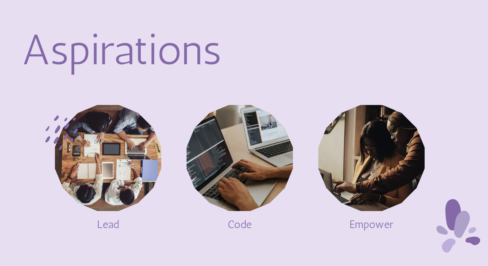

- Lead
- My long-term goal is to manage a team and ultimately play a pivotal role in developing and growing a tech-start up business.
- Code
- Before I jump into this process, my long-term academic objective is to become a full stack developer. I want to learn both front and back-end development as I am rewarded with seeing a project from the start of planning to the end of development.
- Empower
- I strive to be at the forefront of development as a female. I am inspired by over the past decade female entrepreneurship and the growing involvement of technology is changing the face of the overall industry – I want to be a part of this movement. I am highly inspired by the works of Melanie Perkins CEO of Canva. Her entrepreneurial spirit shining at just 19 years old has really inspired me to keep pursuing my dreams in technology free from barriers such as gender and age.